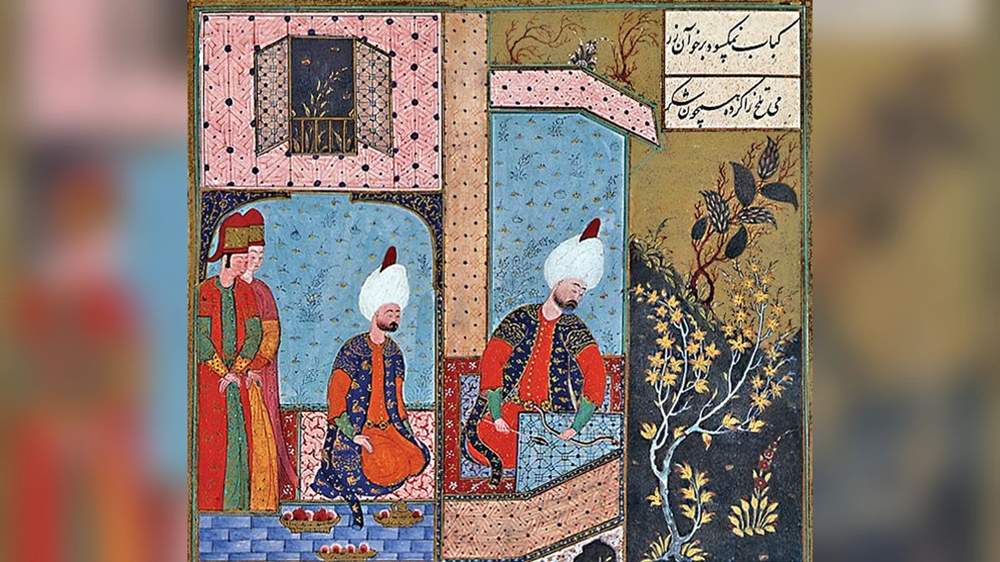
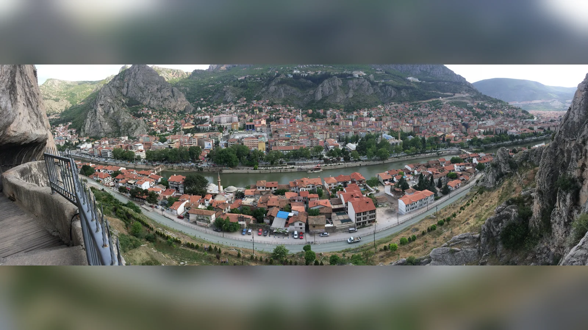
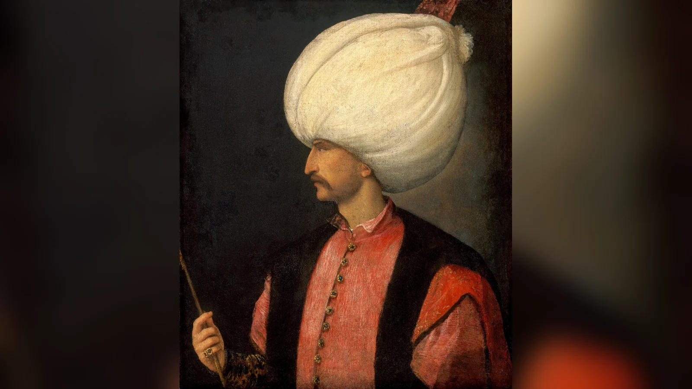
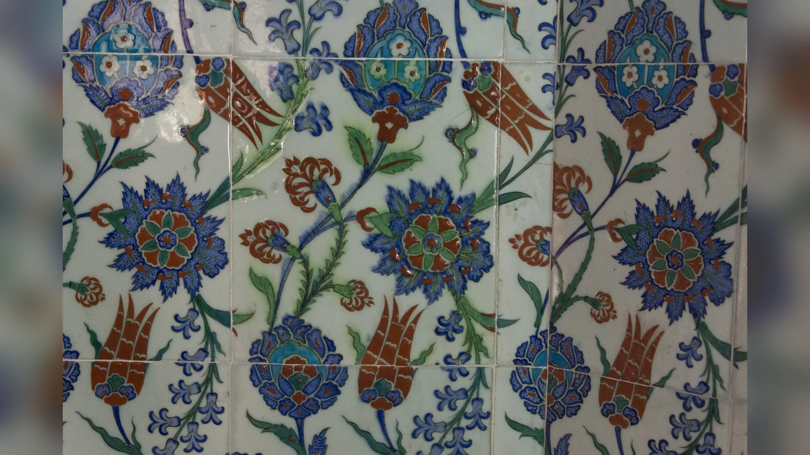

Şehzade Mustafa, Kanuni Sultan Süleyman’ın emriyle 6 Ekim 1553’te, İran seferi sırasında Konya Ereğlisi yakınındaki Aktepe ordugâhında boğdurularak öldürüldü. Kararın arkasında Mustafa’nın babasının sağlığında tahtı ele geçirebileceğine ilişkin kuşkular, askerî çevrelerdeki güçlü itibarı ve Osmanlı hanedanındaki veraset rekabeti bulunuyordu. Hürrem Sultan ile Sadrazam Rüstem Paşa’nın Mustafa aleyhinde çalıştığına ilişkin dönemin kaynaklarında ciddi iddialar vardır. Ancak bu iddialar, Mustafa’nın gerçekten isyan hazırladığı veya Kanuni’nin yalnızca başkalarının hazırladığı bir oyuna kandığı anlamına gelmez.
Bu nedenle “Şehzade Mustafa neden öldürüldü?” sorusunun kısa cevabı ile kesin olarak kanıtlanabilen cevap birbirinden ayrılmalıdır. Kanuni, oğlunu tahtı ve kendi otoritesi için tehlike gördüğü bir siyasi ortamda öldürttü. Mustafa’nın fiilen isyan başlattığına dair tartışmasız bir kanıt ise mevcut değildir. Kararın gerekçesini açıklamak, verilen ölüm emrini hukuken ya da ahlaken haklı bulmak değildir. Üstelik olay, yalnızca bir baba ile oğul arasındaki kişisel güvensizliğin değil, Osmanlı devletinde tahtın geleceğine ilişkin belirsizliğin de ürünüdür.
1553’te öldürülen kişi sıradan bir saray mensubu değildi. Mustafa uzun yıllardır sancak yöneten, kapıkulu askerleri arasında destek gören, kendi maiyetini ve siyasi çevresini oluşturmuş bir şehzadeydi. Aynı özellikler onu birçok kişi için güçlü hükümdar adayı, babasının çevresindeki bazı kişiler içinse potansiyel tehlike hâline getiriyordu. Bu gerilim, Mustafa’nın kaderini açıklarken sürekli akılda tutulmalıdır: Şehzadeye güç kazandıran destek, hükümdarın gözünde iktidarının paylaşılabileceği korkusunu da besleyebilirdi.
Şehzade Mustafa kimdi?
Mustafa, Kanuni Sultan Süleyman ile Mahidevran’ın oğluydu ve 1515 yılında Manisa’da doğdu. Babası henüz şehzade olarak Manisa’da görev yaparken dünyaya gelmesi, Mustafa’nın çocukluğunun hanedanın taşradaki yönetim geleneği içinde başlaması demektir. Süleyman’ın 1520’de tahta çıkmasının ardından Mustafa, hanedanın gelecekteki hükümdar adaylarından biri olarak saray çevresinde yetiştirildi. Henüz çocuk yaşlarda iken hanedanın diğer erkek çocuklarının ölümünü de kapsayan değişen aile tablosu içinde konumu güçlendi.
Mustafa’nın annesi Mahidevran, onun siyasi kariyerinde önemli rol oynadı. Osmanlı sarayında şehzade anneleri yalnız çocuklarını büyüten kişiler değildi; oğullarının sancak hayatını, maiyet ilişkilerini ve sarayla bağlantılarını etkileyebilen hanedan aktörleriydi. Bununla birlikte Mahidevran’ı her kararın gizli yöneticisi gibi göstermek de doğru değildir. Mustafa’nın itibarı, yıllar içinde edindiği idari tecrübe ve çevresinde toplanan kişilerin desteğiyle gelişti.
Mustafa’nın Manisa sancakbeyliğine gönderilişi kaynaklarda 1533 veya 1534 olarak tarihlenir. Şerafettin Turan, bu tayini Şubat 1534’e yerleştirir. Manisa, İstanbul’a görece yakınlığı ve daha önce hükümdar yetiştirmiş olması nedeniyle özel sembolik ağırlığa sahipti. 1541’de Amasya’ya tayin edildi; Manisa’ya Hürrem Sultan’ın oğlu Mehmed gönderildi. Mehmed’in 1543’te ölümü ve sonraki sancak düzenlemeleri hanedan içindeki dengeyi yeniden etkiledi. Mustafa ise Amasya’da uzun yıllar kaldı; askerî ve idarî çevrelerle ilişkilerini sürdürdü.
Mustafa’nın yaşça büyük olması, sancak tecrübesi ve askerler arasındaki şöhreti onun tahta çıkma ihtimalini kuvvetlendiriyordu. Fakat “kesin veliaht” ifadesi yanıltıcıdır. Osmanlı’da modern anlamda, herkesin itirazsız kabul etmek zorunda olduğu değişmez bir veliahtlık kurumu yoktu. Padişah hayattayken güçlü aday olmak ile tahtın hukuken garanti edilmiş sahibi olmak farklı şeylerdi.
Mustafa’nın edebiyat ve sanatla ilişkisi de kaynaklarda görünür. Şehzadelerin çevresinde şair ve âlimlerin bulunması dönemin yönetici kültürünün parçasıydı. Onun ardından yazılan çok sayıdaki mersiye ise hem kişisel itibarını hem de ölümünün yarattığı toplumsal tepkiyi yansıtır. Ancak ölümünden sonra oluşan ideal hükümdar imgesi, yaşarken herkesin Mustafa üzerinde uzlaştığını kanıtlamaz. Hanedan çevresinde başka şehzadelerin de taraftarları ve gelecek hesapları vardı.
Osmanlı verasetinde güçlü şehzade neden tehlikeli görülebiliyordu?
On altıncı yüzyıl Osmanlı siyasetinde hükümdarlığın tek ve tartışmasız mirasçısı önceden belirlenmiyordu. Hanedanın erkek üyeleri arasında taht mücadelesi ihtimali varlığını koruyordu. Tahta çıkan hükümdar, kendi otoritesini kabul ettirebilmek için diğer hanedan mensuplarının desteğini ya da etkisizleştirilmesini hesaba katmak zorundaydı. Bu durum, babaları hayattayken şehzadelerin siyasi çevrelerce geleceğin hükümdarı olarak değerlendirilmesine yol açıyordu.
Şehzadelerin sancaklarda görev yapması bir eğitim yöntemiydi. İdarî kararlar alıyor, mali düzeni öğreniyor, askerî tecrübe kazanıyor ve çevrelerindeki yöneticilerle ilişkiler kuruyorlardı. Fakat aynı sistem potansiyel rakip merkezler de üretiyordu. Bir şehzadenin sancak görevi sırasında kendisine bağlanan kişiler, hükümdarın ölümü veya iktidarının zayıfladığına ilişkin bir algı ortaya çıktığında taht yarışının tarafı hâline gelebilirdi.
Mustafa’nın destek görmesi bu nedenle iki yönlü sonuç doğuruyordu. Bir yandan yetenekli, deneyimli ve sevilen hükümdar adayı olarak itibar kazanıyordu. Öte yandan bazı askerlerin veya devlet adamlarının onu babasının yerine geçebilecek kişi olarak konuşması, Kanuni’nin hâlen hüküm sürdüğü ortamda hassas bir meseleydi. Bir hükümdar açısından sadakatin gelecekteki hükümdara kayması, fiilî isyan çıkmadan önce de otorite sorunu yaratabilirdi.
Burada temel ayrım şudur: Bir şehzadenin hükümdar olmaya uygun görülmesi, onun babasını devirmek için harekete geçtiğini kanıtlamaz. Aynı şekilde, ortada açık isyan bulunmaması hükümdarın hiçbir siyasi tehlike algılamayacağı anlamına gelmez. Tarihçinin görevi bu iki durumu karıştırmadan açıklamaktır. Mustafa’nın öldürülmesi hakkındaki tartışma da tam olarak bu çizgide düğümlenir.
Osmanlı tarihinin önceki hanedan çatışmaları, padişahların neden hassas davranabildiğini gösterir. Fatih sonrasındaki Cem Sultan mücadelesi gibi örnekler, tahtı kaybeden bir hanedan mensubunun yabancı devletler tarafından uzun yıllar siyasi koz olarak kullanılabileceğini göstermişti. Fakat bu tarihsel hafıza, Mustafa’nın öldürülmesini zorunlu veya kaçınılmaz kılmaz. Geçmişte yaşanan riskler, gelecekteki her muhtemel rakibin fiilen suç işlediğini göstermez.
Üstelik Mustafa’nın durumunu klasik kardeş katli örnekleriyle birebir eşitlemek doğru değildir. Burada tahta yeni çıkmış bir kardeşin diğer kardeşlerini öldürtmesi değil, tahtta bulunan babanın kendi oğlunu ortadan kaldırması söz konusuydu. Her iki olgunun arkasında hanedan güvenliği ve veraset kaygısı bulunabilse de olayların siyasi konumu ve karar ilişkisi farklıdır.
Kanuni’nin ailesinin kendi geçmişi de bu korkuya somut bir örnek veriyordu. Babası Yavuz Sultan Selim, yeniçeri desteğinin belirleyici olduğu mücadelede II. Bayezid’in hayattayken tahtı bırakmasını sağlamıştı. Mustafa’nın askerî çevrelerde kazandığı itibar bu nedenle yalnız uzak bir gelecek ihtimali olarak görülmeyebilirdi. Süleyman, bir oğlun babasının saltanatı devam ederken askerlerin desteğiyle öne çıkabileceğini kendi hanedanının yakın geçmişinden biliyordu. Ancak benzer bir güç dengesi, Mustafa’nın dedesinin yolunu izlemeye karar verdiğini kanıtlamaz. Geçmişteki örneğin hükümdarın kaygısını beslemesi ile şehzadenin gerçek niyeti ayrı meselelerdir.
Bu karşılaştırma, kişisel güvensizlik ile kurumsal belirsizliğin nasıl birleşebildiğini gösterir. Şehzadeler devlet yönetimini öğrenirken kendi siyasi çevrelerini de oluşturuyordu; merkez ise bu çevreleri hem hanedanın gelecekteki gücü hem de mevcut saltanatın muhtemel rakibi olarak görebiliyordu. Sistemin şehzadeden istediği deneyim ve destek, belirli koşullarda onun aleyhine dönebiliyordu. Mustafa’nın hikâyesindeki çelişki burada keskinleşir: Tahta hazırlanmak için biriktirdiği nitelikler, tahta henüz çıkmadan hayatını tehlikeye sokan gerekçelere dönüşebiliyordu.
Manisa’dan Amasya’ya: sancak değişiklikleri ne anlatıyor?

Mustafa’nın 1541’de Manisa’dan Amasya’ya gönderilmesi, popüler anlatılarda çoğu zaman Kanuni’nin oğlunu gözden çıkardığının kesin kanıtı gibi sunulur. Oysa bir sancak değişikliğinin anlamı, dönemin idarî ihtiyaçları ve diğer şehzadelerin görevleriyle birlikte değerlendirilmelidir. Manisa’nın başkente yakınlığı ve hanedan geleneğindeki yeri önemliydi; fakat Amasya da köklü şehzade merkezlerinden biriydi. Mustafa’nın Amasya’ya tayini siyasi beklentileri etkileyebilirdi, ancak tek başına ölüm kararına giden doğrusal bir planın belgesi değildir.
Sancak tayinleri, şehzadelerin sarayla temas sıklığını ve çevrelerindeki kadroların coğrafi konumunu etkiliyordu. Manisa’ya yerleşen bir şehzadenin İstanbul’a daha yakın olması, haberleşme ve hareket imkânı bakımından avantaj yaratabilirdi. Amasya’da görev yapan Mustafa ise doğu siyasetine ve İran sınırına ilişkin gelişmelere daha yakın bir çevrede bulunuyordu. Bu coğrafya onun askerî itibarını besleyebileceği gibi Safevîlerle ilişki iddialarının neden bu kadar ciddi algılanabileceğini de açıklar.
Mustafa’nın maiyeti ve askerî çevrelerdeki itibarı, sıradan bir görevlinin popülerliğinden farklıydı. Yeniçeriler ve diğer kapıkulu unsurları hükümdarlık geçişlerinde tarihsel olarak önemli rol oynamıştı. Bir şehzadenin askerlerin gönlünü kazanması, tahta çıkışta önemli avantaj sağlayabilirdi. Ancak babası hâlen hükümdarken aynı ilgi, sadakatlerin bölündüğü şüphesini doğurabilirdi.
Burada “ordu Mustafa’yı istiyordu” cümlesini de sınırlandırmak gerekir. Dönemin anlatıları belirli askerî grupların Mustafa’ya yakınlığından söz eder; bu, bütün askerlerin aynı siyasi kararı aldığı anlamına gelmez. Ordu tek görüşlü kurum değildi. Farklı ocakların, kumandanların ve devlet adamlarının beklentileri farklılaşabiliyordu. Yine de hükümdarın kendi otoritesinin askerler nezdinde sorgulanabileceğini düşünmesi için bütün ordunun isyan etmesi gerekmiyordu.
Mustafa’nın gücünü anlamak için tam da bu belirsizliğe bakmak gerekir. Onun çevresindeki destek ağı ne kadar genişti, kimler hangi aşamada gerçek bir iktidar değişikliğine hazırdı, hangileri yalnız geleceğin padişahına yakın durmak istiyordu? Kaynaklar bu soruların hepsine aynı açıklıkta cevap vermez. Destek beyanıyla fiilî darbe hazırlığını eşitlemek, olayı olduğundan daha kesin gösterir.
Mahidevran, Hürrem Sultan ve hanedanın geleceği
Mustafa’nın siyasi konumu, Kanuni’nin ailesindeki değişen dengelerden ayrı düşünülemez. Mahidevran’ın oğlu olarak Mustafa, Süleyman’ın hayatta kalan en büyük oğullarından biriydi. Hürrem Sultan’ın Süleyman’dan doğan oğulları ise hanedan içinde başka bir gelecek ihtimali oluşturuyordu. Mehmed’in ölümünden sonra Selim ve Bayezid gibi şehzadeler taht yarışının olası aktörleri olarak öne çıktı. Bu durum sarayda farklı anne ve oğul çevrelerinin çıkarlarını karşı karşıya getiriyordu.
Hürrem Sultan’ın oğullarının geleceğiyle ilgilenmesi, dönemin hanedan düzeni açısından anlaşılırdır. Tahta çıkan şehzadenin rakip kardeşlerini ortadan kaldırabildiği siyasi ortamda bir annenin oğlunun hükümdar olmasını istemesi yalnız yükselme arzusuyla açıklanamaz; aynı zamanda hanedan içi hayatta kalma kaygısıyla bağlantılıdır. Bununla birlikte bu yapısal gerçeği kabul etmek, Hürrem’in Mustafa’nın öldürülmesini doğrudan planladığının kesin belgesi değildir.
Hürrem’in Kanuni’ye erişimi ve saray içindeki etkisi önemliydi. Hükümdarla kurduğu yakınlık, yazışmalar ve hanedan ilişkileri ona siyasi meselelerde söz sahibi olma imkânı veriyordu. Ancak erişim ile nihai karar yetkisini birbirinden ayırmak gerekir. Mustafa’nın öldürülmesi, hükümdarın emriyle gerçekleşti. Hürrem’in olası telkinlerini tartışırken Kanuni’nin karar verme sorumluluğunu başka bir kişiye devretmek tarihsel açıklamayı eksiltir.
Mustafa’nın ölümünü tek başına “Hürrem’in annelik hırsı” şeklinde açıklayan anlatı, saray siyasetini birkaç kişinin duygusal rekabetine indirger. Oysa devlet adamlarının konumu, askerî destek ağları, İran seferinin şartları ve Kanuni’nin otoritesi de bu kararın bağlamındadır. Hürrem’in çıkarları gerçekti; fakat bir çıkarın bulunması, onun nasıl ve hangi araçlarla sonuca dönüştüğünü ayrıca kanıtlamayı gerektirir.
Mahidevran’ın Mustafa’nın öldürülmesinden sonraki hayatı ise hanedan rekabetinin insani bedelini görünür kılar. Oğlunun ölümünün ardından siyasi konumunu kaybetti, Bursa’da güç koşullarda yaşadığı ve sonradan geçiminin devlet tarafından düzenlendiği aktarılır. Bu sonuç, sarayda anne olmanın sağladığı statünün oğlun geleceğine ne kadar bağlı olabildiğini gösterir. Hanedan kadınlarının gücü de güvenliği de çoğu zaman oğullarının kaderinden bağımsız değildi.
Rüstem Paşa’nın konumu ve komplo iddiaları
Sadrazam Rüstem Paşa, Kanuni’nin damadı ve Mihrimah Sultan’ın eşi olarak hanedana güçlü bağlarla bağlıydı. Aynı zamanda devletin en üst yürütme makamında bulunuyordu. Bu konum, onu Mustafa’nın geleceği hakkında yürütülen mücadelede merkezi aktörlerden biri hâline getiriyordu. Hürrem Sultan’ın oğullarının tahta çıkmasından çıkar sağlayabilecek bir siyasi çevrenin parçası olması, dönemin anlatılarında onun adının neden sık geçtiğini açıklar.
Rüstem Paşa’nın Mustafa aleyhinde çalıştığına ilişkin rivayetler yalnız modern televizyon senaryolarının ürünü değildir. Osmanlı tarih yazımında ve daha sonra kaleme alınmış eserlerde bu rol belirgin biçimde anlatılır. Türk Tarih Kurumu tarafından yayımlanan İsmail Hakkı Uzunçarşılı’nın çalışması da Rüstem Paşa’nın Mustafa’nın ölümündeki rolüne ilişkin bir dizi iddiayı ve belge değerlendirmesini içerir. Bununla birlikte rivayetlerin varlığı ile her ayrıntının bağımsız biçimde kanıtlanmış olması aynı şey değildir.
En çok tekrarlanan iddialardan biri, Mustafa’nın Safevî hükümdarı Şah Tahmasb’la yazışıyormuş gibi gösterilmesi ve sahte mühür ya da mektuplarla Kanuni’nin şüphelerinin güçlendirilmesidir. Bu hikâye bazı tarihî anlatılarda yer alır. Fakat bugün herkesin üzerinde uzlaştığı, sahteciliğin bütün aşamalarını ortaya koyan ve olayın doğrudan sebebi olduğunu tartışmasız kanıtlayan belge zincirine sahip değiliz. Bu nedenle “Rüstem sahte mektup hazırladı, Kanuni gördü ve oğlunu öldürttü” şeklindeki tek hatlı anlatı gereğinden fazla kesinlik taşır.
Şah Tahmasb bağlantısının siyasi anlamı ise açıktır. Osmanlı Devleti, Safevîlerle uzun süreli askerî ve mezhebî-siyasi rekabet içindeydi. Hükümdarın oğlunun düşman şah ile temas kurduğu iddiası, sıradan saray dedikodusundan çok daha ağır sonuçlar doğurabilecek suçlamaydı. Böyle bir ilişkinin gerçekten var olup olmadığı ayrı sorudur; Kanuni’ye böyle bir ihtimalin sunulması veya onun bu ihtimalden endişe etmesi ise karar ortamını açıklayabilir.
Rüstem’in 1553 seferi öncesinde askerler arasında Mustafa lehine eğilim bulunduğunu padişaha bildirdiği de kaynaklarda aktarılır. Uzunçarşılı’nın aktardığına göre, Rüstem’in komutasındaki birliklerin Mustafa’yı hükümdar ilan etme niyetinde olduğuna ilişkin haberler Kanuni’ye ulaştırılmış, bunun üzerine Süleyman ordunun başına bizzat geçmiştir. Burada da haberin doğruluğu ile hükümdarın habere verdiği tepki ayrılmalıdır. Casus raporu, söylenti veya taraflı ihbar gerçek bir isyanın başladığını tek başına kanıtlamaz.
Rüstem Paşa’nın sonradan görevden alınması da suçunun kesinleştiğini gösteren mahkeme kararı gibi okunmamalıdır. İnfazın yarattığı askerî tepki karşısında sadrazamın uzaklaştırılması siyasi krizi yatıştırma hamlesi olabilirdi. Öte yandan Rüstem’in iki yıl sonra yeniden sadrazam olması, Kanuni’nin onu bütünüyle suçlu ve güvenilmez gördüğü şeklindeki basit anlatıyı zorlaştırır. Bu karmaşıklık, saray entrikası hikâyesinin neden tek başına yeterli olmadığını gösterir.
Kanuni hangi tehlikeyi görmüş olabilir?

1553’e gelindiğinde Kanuni uzun yıllardır hüküm süren, büyük seferler yönetmiş ve imparatorluğun kurumlarını şekillendirmiş hükümdardı. Fakat uzun saltanat, veraset sorununun ertelenmesi anlamına da geliyordu. Şehzadeler yetişmiş, çevrelerindeki siyasi beklentiler belirginleşmişti. Devletin gelecekte kimin yönetiminde devam edeceği sorusu yalnız hanedanın özel meselesi olmaktan çıkmış, askerî ve bürokratik çevrelerin hesaplarına girmişti.
Mustafa’nın itibarı bu ortamda önem kazandı. Yaşça büyük, sancak tecrübeli ve askerler arasında destek gördüğü aktarılan bir şehzadenin, padişah hayattayken bile geleceğin hükümdarı olarak konuşulması Kanuni’nin otoritesini zayıflatabilecek bir gelişmeydi. Zahit Atçıl’ın 2016’da yayımlanan araştırması, olayı yalnız Hürrem–Rüstem komplosuyla açıklamak yerine Süleyman’ın otoritesinin Mustafa lehine aşınması ve hükümdarın kendi iktidarını yeniden tesis etme arayışı çerçevesinde değerlendirir.
Bu yorumun gücü, infazı daha geniş veraset düzeniyle ilişkilendirmesidir. Kanuni’nin gerçekten hangi anda ne düşündüğünü gösteren eksiksiz kişisel kayıtlar bulunmadığından onun korkusuna kesin psikolojik teşhis koyamayız. Fakat hükümdarın kendi sağlığında alternatif güç odağının oluşmasına karşı sert tepki vermiş olabileceği, dönemin siyasal yapısıyla tutarlı açıklamadır.
Yine de açıklamanın sınırları vardır. Mustafa’ya yakınlık duyan askerlerin varlığı, onun babasını devirmek için emir verdiğini kanıtlamaz. Hükümdarın kendisini tehdit altında hissetmesi, tehdidin nesnel olarak ne kadar yakın olduğunu göstermeyebilir. Siyasi kararlar bazen gerçekleşmiş olaylara değil, gelecekte gerçekleşebileceği düşünülen ihtimallere dayanır. Mustafa’nın ölümünü anlamak için bu ihtimal siyasetini hesaba katmak gerekir.
Buradaki etik sorun da tam olarak buradan doğar. Fiilî isyanı bastırmak ile henüz isyan etmemiş olabilecek bir hanedan mensubunu gelecekteki tehlike gerekçesiyle öldürmek aynı şey değildir. Osmanlı hükümdarlarının hanedan güvenliğini önceleyen kararlarını tarihsel koşulları içinde açıklayabiliriz; fakat açıklama, her korkunun doğru veya her infazın zorunlu olduğu sonucunu doğurmaz.
1553 İran seferinde infaza giden yol
Osmanlı-Safevî gerilimi, 1552’de başlayan sefer hazırlıklarını hızlandırdı. Rüstem Paşa önce serdar olarak görevlendirildi; Kanuni 1553’te ordunun başına bizzat geçti. Sefer hazırlıkları sırasında Rüstem Paşa’nın askerî çevrelerde Mustafa lehine bir hareketlilik bulunduğuna dair haberleri Kanuni’ye ilettiği aktarılır. Süleyman’ın bizzat sefere çıkması, yalnız İran’a karşı ordunun başında görünmesi bakımından değil, merkezî otoritesini askerlerin gözünde yeniden belirginleştirmesi açısından da önemlidir.
Kanuni’nin ordusu sonbaharda Konya Ereğlisi yakınlarına ulaştı. Mustafa, Amasya sancakbeyi olarak kuvvetleriyle sefere katılmak ve Ereğli’de babasıyla buluşmak üzere çağrıldı. Bir şehzadenin seferde padişahın huzuruna çıkması tek başına olağandışı değildi. Fakat Mustafa’nın etrafındaki kuşkular düşünüldüğünde bu ziyaret olağan saray protokolünden daha büyük siyasi anlam taşıyordu.
Mustafa’nın kendisine yönelik tehlikeden haberdar olup olmadığı ve çevresinin onu ne ölçüde uyardığı hakkında farklı anlatılar vardır. Bazı kronikler uyarılara rağmen babasının huzuruna çıkmayı tercih ettiğini söyler. Bu anlatılar, Mustafa’nın sadakatini vurgulamak için de kullanılmış olabilir. Bu yüzden uyarı anlatılarını, Mustafa’nın o gün bütün riskleri bildiğinin veya hiçbir şüphe taşımadığının kesin göstergesi olarak okuyamayız.
6 Ekim 1553’te Mustafa padişah otağına geldi ve boğularak öldürüldü. İnfazın mekânı kaynaklarda Konya Ereğlisi yakınındaki Aktepe ordugâhı olarak geçer. Bazı anlatılar çadır içindeki mücadeleyi ayrıntılı biçimde tasvir eder; fakat bu sahnelerin her hareketini bağımsız biçimde doğrulamak mümkün değildir. Kesin olan, Mustafa’nın babasının emriyle ordugâhta öldürülmüş olmasıdır.
Olayın askerî sefer sırasında gerçekleşmesi rastlantısal ayrıntı değildir. Mustafa’nın askerler arasındaki itibarı nedeniyle infazın ordugâhta yapılması güçlü tepki ihtimali taşıyordu. Aynı zamanda padişahın ordunun başında bulunması, kararın merkezî otorite tarafından doğrudan uygulanmasını sağlıyordu. Hükümdarın kendi askerî gücünün önünde oğlunu öldürtmesi, saltanatın kime ait olduğu sorusuna en sert cevaplardan biriydi.
İnfazın ayrıntıları sonraki anlatılarda dramatik bir sahneye dönüşür. Mustafa’nın son sözleri, Süleyman’ın çadır içindeki konumu ve infaz sırasında yaşanan mücadele hakkında aktarılan ayrıntılar aynı ölçüde doğrulanabilir değildir. Kaynakların ortaklaştığı temel gerçek, güçlü taht adayı Mustafa’nın hükümdarın emriyle öldürülmesidir. Elde bulunan anlatılar, onun fiilî bir isyana giriştiğini tartışmasız biçimde ortaya koyan bir yargılama kaydı sunmaz.
Mustafa gerçekten isyan mı hazırlıyordu?
Mustafa’nın ölümünün en zor sorusu, babasına karşı fiilen harekete geçmeye hazırlanıp hazırlanmadığıdır. Kaynaklarda askerlerin onu desteklediğine, bazı çevrelerin Süleyman’ın yaşlandığını düşündüğüne ve Mustafa’nın Safevîlerle ilişki kurduğu yönünde suçlamalar bulunduğuna ilişkin bilgiler vardır. Fakat bunların hepsi aynı tür kanıt değildir. Bir askerî çevrenin temennisi, bir sadrazamın ihbarı ve şehzadenin imzasını taşıyan doğrulanmış bir isyan emri birbirinden ayrılmalıdır.
Mustafa’nın İran şahıyla gizli yazıştığına ilişkin mektup hikâyesi özellikle dikkat gerektirir. Bazı anlatılarda Rüstem Paşa’nın sahte mektup veya mühür düzenlediği belirtilir. Bu iddianın tarih yazımında yer alması, onun otomatik olarak bağımsız belgeyle doğrulandığı anlamına gelmez. Üstelik Safevîlerle gerçek bir ittifak arayışı varsa bunun kimler aracılığıyla yürütüldüğü, ne zaman gerçekleştiği ve şehzadenin bilgisi dahilinde olup olmadığı ayrıca gösterilmelidir.
Kanuni’nin gözünde tehlikenin büyüklüğüyle tarihçinin kanıtlayabildiği tehlike aynı olmak zorunda değildir. Süleyman, kendisine ulaşan haberlerin doğru olduğuna inanmış olabilir. Hatta askerî sadakatin kaymasından duyduğu endişe, Mustafa’nın fiilî emrinden bağımsız olarak güçlenmiş olabilir. Fakat bugün onun bu inancını Mustafa’nın kesin suçluluğunun yerine koyamayız.
Mustafa’nın masumiyetine ilişkin güçlü tarihsel hafıza da dikkatle değerlendirilmelidir. İnfaz sonrasında yazılan mersiyeler, şehzadenin haksız yere öldürüldüğünü düşünen çevrelerin sesini taşır. Bu metinler dönemin tepkisini anlamak için kıymetlidir; ancak her bir siyasi ayrıntıyı tarafsız soruşturma gibi kanıtlamaz. Aynı şekilde Mustafa aleyhindeki resmî veya saraya yakın anlatılar da hükümdarın kararını meşrulaştırma amacı taşıyabilir.
Sonuçta eldeki kanıtlarla Mustafa’nın kesin biçimde darbe hazırladığı hükmüne varmak güçtür. Bunun tersine, hiçbir siyasi faaliyetinin bulunmadığını veya çevresindeki bütün desteğin tamamen pasif olduğunu kesin söylemek de aynı ölçüde sorunludur. Daha sağlam açıklama, güçlü şehzade çevresinin Kanuni’nin otoritesi açısından tehdit olarak algılandığı, saray rekabetinin bu algıyı beslediği ve hükümdarın nihai olarak ölüm emrini verdiğidir.
İnfazın hukukî gerekçesi neydi?
Ebüssuûd Efendi’den Mustafa’nın öldürülmesine ilişkin fetva alındığı, dönemin olayını aktaran tarih yazımında yer alır. Fakat fetvanın varlığına ilişkin anlatı ile Mustafa’ya yöneltilen suçlamaların doğruluğu aynı soru değildir. Bir hukukî görüş, hükümdara sunulan olayın belirli şartlar altında nasıl değerlendirileceğini açıklayabilir; o şartların gerçekte oluştuğunu tek başına kanıtlamaz. Bu nedenle fetvadan söz ederken şehzadenin isyanının ayrıca ve tartışmasız biçimde belgelenmiş olduğunu varsaymak doğru olmaz.
Kardeş katli düzenlemesiyle yapılan karşılaştırmanın sınırı da burada önem kazanır. Fatih Kanunnâmesi’yle ilişkilendirilen hanedan güvenliği düşüncesi, veraset rekabetine karşı devletin sert yaklaşımını anlamaya yardımcı olur. Ancak Mustafa’nın infazını yalnızca bu düzenlemenin otomatik uygulanması gibi göstermek, tahtta bulunan babanın oğluna ilişkin özel kararını görünmez kılar. Hukukî meşrulaştırma, siyasi neden ve suçun tarihsel kanıtı birbirinden ayrıldığında olay daha açık anlaşılır.
Hürrem–Rüstem komplosu anlatısı neyi açıklar, neyi açıklamaz?
Hürrem Sultan ile Rüstem Paşa’nın Mustafa’nın tasfiyesinden çıkar sağlayabilecek konumda bulunması tarihsel bir gerçektir. Hürrem’in oğullarının taht ihtimali güçleniyor, Rüstem ise hanedanla akrabalığı ve sadrazamlık makamı sayesinde merkezî siyasette belirleyici rol oynuyordu. Dönemin bazı kaynaklarının bu ikiliyi Mustafa aleyhindeki girişimlerle ilişkilendirmesi bu nedenle dikkate alınmalıdır.
Bununla birlikte çıkar ilişkisi, bütün olayların tek merkezden kusursuzca planlandığını kanıtlamaz. Komplo anlatısı Kanuni’yi kolayca kandırılmış baba konumuna yerleştirirken hükümdarın kendi iktidar kaygısını ve karar yetkisini arka plana iter. Oysa Mustafa’nın öldürülmesi yalnız Rüstem’in isteğiyle gerçekleşemezdi; infaz emri padişahın otoritesine dayanıyordu.
Ayrıca Kanuni’nin uzun süren saltanatı boyunca veraset rekabetinin birikmesi, askerlerin Mustafa’ya yakınlığı ve İran seferinin yarattığı koşullar tek bir sahte mektuba indirgenemeyecek kadar geniş bağlam oluşturur. Eğer Rüstem ve Hürrem gerçekten Mustafa aleyhinde yoğun faaliyet yürüttülerse, bu faaliyetlerin etkili olabilmesi de zaten mevcut siyasi gerilimlerden yararlanmasına bağlıydı.
Saray entrikası anlatısının kalıcı olmasının bir nedeni dramatik açıklama sunmasıdır: İyi şehzade, kötü danışman, kandırılan baba. Bu yapı anlaşılması kolaydır; fakat tarihsel aktörlerin sorumluluklarını basitleştirir. Mustafa’yı sevilen şehzade olarak tanımak, Kanuni’nin kararını yalnız duygusal manipülasyona bağlamayı gerektirmez. Hürrem’in siyasi etkisini kabul etmek de her belgesiz ayrıntıyı kesinleştirmeyi haklı kılmaz.
Daha tutarlı yaklaşım, saray içi çıkar çatışmalarını, askerî çevrelerdeki Mustafa desteğini ve hükümdarın otorite kaygısını aynı tabloda değerlendirmektir. Bunların birbirini nasıl etkilediği tartışılabilir; ancak kararın tek bir gizli fail tarafından kaçınılmaz biçimde üretildiğini söylemek kaynakların izin verdiğinden daha ileri gider.
İnfazın ardından ordu ve toplum nasıl tepki verdi?
Mustafa’nın öldürülmesi ordu içinde büyük huzursuzluk yarattı. Kaynaklarda özellikle askerlerin şehzadenin ölümüne tepki gösterdiği, Rüstem Paşa’yı sorumlu tuttuğu ve sadrazamın görevden alınmasının gerilimi yatıştırdığı aktarılır. Bu tepki, Mustafa’nın askerî çevrelerdeki itibarının yalnız ölümünden sonra üretilmiş efsane olmadığını gösteren önemli işarettir. Yine de bütün askerlerin aynı görüşte olduğu sonucunu çıkarmamak gerekir.
Rüstem Paşa sadrazamlıktan azledildi ve yerine Kara Ahmed Paşa getirildi. Değişiklik, kararın yarattığı siyasi maliyetin büyüklüğünü ortaya koyar. Padişah oğlunu öldürtme yetkisini kullanmıştı; ancak bu kararın ordu ve kamuoyu nezdinde hiçbir bedeli olmadığını söylemek mümkün değildir. Devlet otoritesi yalnız emir verme gücünden ibaret değildi; verilen emrin ardından bağlılığı yeniden kurmak da gerekiyordu.
Rüstem’in 1555’te yeniden sadrazamlığa getirilmesi, görevden alınmanın kesin suç tespiti olmadığını hatırlatır. Kanuni, ilk tepkileri yatıştırmak için onu uzaklaştırmış ve koşullar değiştiğinde yeniden görevlendirmiş olabilir. Bu ihtimal, Rüstem’in olayda rolü bulunmadığını ispatlamaz; fakat “Kanuni gerçeği öğrendi, suçluyu cezalandırdı” biçimindeki basit anlatıyı zayıflatır.
Mustafa’nın ölümü üzerine yazılan mersiyeler olayın toplumsal hafızasında ayrı yer tutar. Taşlıcalı Yahya Bey’in ünlü mersiyesi, şehzadenin öldürülmesini ağır bir haksızlık olarak yorumlayan edebî ve siyasi tepkinin güçlü örneğidir. Şair, yas dilini kullanırken dönemin iktidar ilişkilerine yönelik eleştiri de yöneltir. Bu nedenle mersiye yalnız estetik metin değil, kararın nasıl karşılandığını gösteren tarihsel tanıklıktır.
Ancak mersiyenin amacı mahkeme tutanağı hazırlamak değildir. Şiirin haksızlık duygusunu dile getirmesi, aktardığı her suçlamanın bağımsız olarak doğrulandığı anlamına gelmez. Buna rağmen çok sayıda şairin Mustafa için yas metni yazması, ölümün olağan hanedan uygulaması gibi sessizce kabul edilmediğini gösterir. Mustafa’nın siyasi itibarı, ölümünden sonra ahlaki mağduriyet simgesine dönüştü.
Bu dönüşümün kendisi de tarihsel sonuçtur. Hükümdar infazla olası rakibi ortadan kaldırdı, fakat kararın meşruiyeti hakkındaki tartışmayı bitiremedi. Askerî ve edebî tepki, saltanat otoritesi ile toplumun adalet beklentisinin her zaman aynı yönde ilerlemediğini gösterdi.
Mustafa’nın ailesinin akıbeti ve hanedanın sonraki yılları

Mustafa’nın ölümünün etkileri kendi hayatıyla sınırlı kalmadı. Şehzadenin oğlu Mehmed de 1554’te öldürüldü. Bu olay, hanedan güvenliği mantığının yalnız mevcut şehzadeye değil, onun soyundan gelebilecek yeni taht iddialarına da uzanabildiğini gösterir. Mustafa’nın aile çevresinin siyasi gücü çöktü; annesi Mahidevran Bursa’da uzun süre maddi güçlükler yaşadı. Hanedan rekabetinde kaybeden tarafın akıbeti, bireysel ölümden daha geniş ailevi sonuçlar doğuruyordu.
Mustafa’nın öldürülmesinden kısa süre sonra Şehzade Cihangir de öldü. Popüler anlatılarda Cihangir’in ağabeyinin ölümüne duyduğu üzüntüden hayatını kaybettiği sıkça söylenir. Ancak bunu kesin tıbbi ölüm nedeni olarak sunmak doğru değildir. Cihangir’in sağlık sorunları bulunduğu bilinir; Mustafa’nın ölümüyle ilgili duygusal anlatılar kaynaklarda yer alsa bile bunlar doğrudan tıbbi teşhis yerine geçmez.
Mustafa’nın ortadan kaldırılması Hürrem Sultan’ın oğulları arasındaki veraset sorununu da çözmedi. Hürrem’in 1558’de ölümünden sonra Selim ile Bayezid arasındaki rekabet sertleşti. Bayezid’in yenilgisi ve 1561’de oğullarıyla birlikte öldürülmesi, hanedan mücadelesinin Mustafa’nın infazıyla sona ermediğini gösterdi. Sonunda 1566’da Kanuni’nin ölümü üzerine II. Selim tahta çıktı.
Bu gelişmeler “Mustafa öldürülmeseydi hiçbir taht kavgası yaşanmazdı” iddiasının neden tarihsel kanıt sayılamayacağını gösterir. Mustafa’nın varlığı rekabeti artırıyor olabilir; fakat onun yokluğu veraset düzenindeki temel belirsizliği ortadan kaldırmadı. Hanedanın başka erkek üyeleri arasında da aynı sorun yeniden ortaya çıktı.
Öte yandan “Mustafa yaşasaydı Osmanlı asla gerilemezdi” gibi karşı tarihsel iddialar da bilgi değildir. Mustafa’nın askerî itibarı ve sancak deneyimi gelecekte nasıl hükümdar olacağı hakkında kesin hüküm kurmamıza yetmez. Tahta çıkması durumunda hangi savaşları kazanacağı, hangi reformları yapacağı veya imparatorluğun sonraki yüzyıllarını nasıl değiştireceği bilinemez. Bu tür senaryolar tarihsel değerlendirme değil, varsayımsal kurgu olarak kalır.
Mustafa’nın ailesinin ve diğer şehzadelerin yaşadıkları, veraset rekabetinin kişisel ilişkilerden bağımsız işleyen yapısal maliyetini gösterir. Hanedan mensubu olmak büyük imkân sağlıyor, fakat aynı zamanda siyasi şüphelerin odağına yerleştiriyordu. Bir şehzadenin geleceği, çoğu zaman kendi davranışları kadar başkalarının onun adına kurduğu beklentilere de bağlıydı.
Mustafa’nın ölümü neden hâlâ tartışılıyor?
Şehzade Mustafa’nın öldürülmesi, Osmanlı tarihinin en çok tartışılan olaylarından biridir; çünkü üç farklı soru sürekli birbirine karıştırılır. İlk soru, infazın gerçekleşip gerçekleşmediğidir. Bu konuda belirsizlik yoktur: Mustafa 1553’te Kanuni’nin emriyle öldürüldü. İkinci soru, Kanuni’nin hangi siyasi tehlikeyi gördüğüdür. Burada askerî destek, hanedan rekabeti ve saray içi suçlamalar önemli açıklamalar sunar. Üçüncü soru ise Mustafa’nın gerçekten suçlu olup olmadığıdır. Bu konuda eldeki kaynaklar kesin hükme izin vermez.
Modern popüler kültür, özellikle tarihî diziler, olayı çoğu zaman tek bir komplo sahnesine dönüştürür. Bu anlatı izleyicinin kimden yana olacağını kolayca belirler. Oysa tarihçinin önündeki kaynaklar farklı zamanlarda, farklı siyasi konumlarda ve farklı amaçlarla üretilmiştir. Saraya yakın kronikler hükümdarın kararını açıklama veya savunma eğiliminde olabilir; şehzade yanlısı şiirler ise mağduriyeti vurgulayabilir. Avrupa elçilerinin raporları önemli gözlemler sunsa da her biri infazın doğrudan tanığı değildir.
Örneğin Ogier Ghiselin de Busbecq’in Osmanlı siyasetine ilişkin mektupları, Avrupa’daki Mustafa algısını anlamak için değerlidir. Ancak Busbecq’in İstanbul’a geliş zamanı ve aktardığı haberlerin dolaşım koşulları dikkate alınmadan onu 1553’te çadırda yaşananların görgü tanığı gibi göstermek yanlıştır. Döneme yakın olmak, her olayı bizzat görmek demek değildir.
Mustafa’nın ölümünün bu kadar güçlü hafızaya dönüşmesinde şehzadenin itibarı kadar olayın baba-oğul ilişkisi içinde gerçekleşmesi de etkiliydi. Osmanlı tarihinde hanedan mensuplarının öldürülmesi örnekleri vardı; fakat uzun süre hükümdar adayı görülen oğlun, babası henüz tahtta iken ordugâhta öldürülmesi, meşruiyet ve adalet sorularını özellikle keskinleştirdi.
Tartışmanın bugün sürmesi, tek başına belgelerin azlığından kaynaklanmaz. Olay tarihsel açıklama ile ahlaki değerlendirmeyi karşı karşıya getirir. Kanuni’nin kararını dönemin siyasi yapısıyla ilişkilendiren bir araştırmacı, infazı onaylamak zorunda değildir. Mustafa’nın isyanını kanıtlayamayan bir araştırmacı da Kanuni’nin hiçbir güvenlik kaygısı bulunmadığını söylemiş olmaz. İyi tarih anlatısı bu iki gerçeği aynı anda taşıyabilmelidir.
Kaynakların farklı sesleri: olayın izini nasıl sürüyoruz?
Şehzade Mustafa’nın ölümünü anlamak için kullanılan kaynaklar aynı türden bilgi üretmez. Osmanlı kronikleri hükümdarlığın meşruiyetini ve saray çevresindeki ilişkileri kendi bakış açılarından anlatır. Venedik ve diğer Avrupa diplomatik raporları, İstanbul’da duyulan söylentileri, yabancı temsilcilerin değerlendirmelerini ve dönemin güç dengelerini yansıtır. Safevî çevresinden gelen anlatılar ise Osmanlı-İran rekabetinin etkisi altında şekillenebilir. Bu metinleri yan yana getirmek yararlıdır; ancak farklı yerlerde aynı söylentinin tekrarlanması, onun bağımsız biçimde doğrulandığını göstermez.
Zahit Atçıl’ın Osmanlı, Venedik, Habsburg, Fransız ve Fars kaynaklarını birlikte değerlendiren araştırması, bu nedenle önemli bir yöntem örneğidir. Araştırma, Mustafa’nın öldürülmesini tek başına bir saray komplosunun başarısı olarak değil, Kanuni’nin otoritesini yeniden kurma girişimi olarak da okumayı önerir. Bu açıklama, bütün tartışmaları kesin olarak bitiren bir hüküm değil, farklı kaynakların işaret ettiği siyasi yapıyı anlamlandıran tarihsel yorumdur. Mustafa’nın kesin suçluluğu hakkında belge sunmadığı ölçüde yorumun da sınırı vardır.
İsmail Hakkı Uzunçarşılı’nın Rüstem Paşa üzerine çalışması ise daha geleneksel anlatının önemli unsurlarını, özellikle sahte yazışma iddialarını ve askerlerin Mustafa lehine tutumuna ilişkin haberleri bir araya getirir. Böyle bir çalışmadan yararlanırken aktarılan belgenin içeriği ile tarihçinin o belgeye yüklediği anlamı ayrı ayrı değerlendirmek gerekir. “Bir vesikaya göre” veya “rivayete göre” denilen yerde anlatının kesinliğini artırmak, kaynağın kendi ihtiyatını ortadan kaldırır.
Taşlıcalı Yahya’nın mersiyesi başka bir pencere açar. Şairin derdi Mustafa’nın hangi gün kime hangi emri verdiğini kayıt altına almak değil, ölümün yarattığı haksızlık duygusunu ifade etmektir. Buna rağmen şiirin siyasi değeri küçümsenemez. Bir hükümdar kararına karşı hangi eleştirilerin dolaşıma girebildiğini ve Mustafa’nın nasıl bir mağduriyet simgesine dönüştüğünü gösterir. Kaynak eleştirisi, edebî metni tamamen dışlamak değil, ondan hangi soruya cevap alınabileceğini bilmektir.
Dönemin elçi anlatıları da benzer dikkat ister. Avrupa temsilcileri sarayda olup biten her toplantıya katılmıyordu; kimi zaman haberleri aracılardan öğreniyordu. Diplomatik raporlarda bir iddianın yer alması onun dönemde konuşulduğunu gösterebilir, fakat doğrudan gerçekleştiğini kanıtlamayabilir. Busbecq’in daha sonraki gözlemleri ve aktardığı hikâyeler özellikle bu açıdan değerlendirilmelidir. Onun anlatı gücü, 1553’te Mustafa’nın öldürüldüğü anda ordugâhta bulunmuş olduğu anlamına gelmez.
Bu farklı kaynak türlerini karşılaştırınca kesin olanlarla tartışmalı olanlar daha görünür hâle gelir. İnfazın tarihi, yeri, emri veren hükümdar ve yarattığı büyük tepki güçlü biçimde belgelenmiştir. Buna karşılık sahte mektubun nasıl üretildiği, Mustafa’nın gerçekten hangi siyasi girişimlerde bulunduğu ve Kanuni’nin kararını hangi haberin kesinleştirdiği aynı açıklıkta değildir. Olayın tarihsel önemini korumak için boşlukları tek bir dramatik hikâyeyle doldurmaya ihtiyaç yoktur.
Hükümdarın otoritesi ile şehzadenin meşruiyeti arasındaki gerilim
Mustafa’nın durumunu farklı kılan, onun dışarıdan gelen bir taht iddiacısı olmamasıydı. Padişahın oğluydu ve hanedan geleneği içinde geleceğin hükümdarı olarak görülmesi anlaşılabilirdi. Dolayısıyla onu destekleyen asker veya devlet adamı, kendi bakış açısından hanedana karşı çıkmadığını, hanedanın geleceğini güvence altına aldığını düşünebilirdi. Kanuni açısından ise aynı tutum, mevcut hükümdara bağlılığın zayıflaması demekti. Aynı hanedana sadakat, farklı kişiler için farklı siyasi tercihlere dönüşebiliyordu.
Bu çelişki, kesin veraset kuralı bulunmayan sistemlerin yapısal problemidir. Hükümdar hayattayken geleceğin hükümdarına yatırım yapmak, gelecekte makam ve güvenlik kazanmanın yolu olabilir. Fakat mevcut hükümdar, bu beklentiyi kendi otoritesine yönelik erken meydan okuma olarak algılayabilir. Mustafa’nın çevresindeki ilginin gerçek sınırlarını her zaman bilemesek de bu mekanizma onun neden hem umut hem tehdit simgesine dönüştüğünü açıklar.
Bir başka önemli nokta, infazın siyasal zamanlamasıdır. Mustafa’ya ilişkin kuşkuların bir kısmı daha önce de dolaşmış olabilir; fakat karar İran seferinin askerî gerilimi içinde uygulandı. Ordu, hükümdarın otoritesini en görünür biçimde kullandığı yerdi. Bu nedenle infazın ordugâhta gerçekleşmesi, saltanatın yalnız saray içi değil askerî hiyerarşi içinde de yeniden teyit edilmesi olarak yorumlanabilir. Bunun Kanuni’nin bilinçli ve tek amacı olduğunu kanıtlamak mümkün değildir; fakat kararın sonuçları bakımından böyle bir işlev taşıdığı açıktır.
Mustafa’nın öldürülmesinden sonra yaşanan tepki ise bu tür güç gösterilerinin her zaman beklenen itaati üretmediğini gösterir. Bir şehzade fiziksel olarak ortadan kaldırılabilir; fakat onu destekleyenlerin adalet ve meşruiyet hakkındaki değerlendirmeleri emirle ortadan kalkmaz. Taşlıcalı Yahya’nın mersiyesinin yüzyıllar boyunca hatırlanması, siyasi kararın kültürel hafızada nasıl farklı anlam kazandığının güçlü örneğidir.
Sonuç: Kanuni’nin kararı neyi çözdü, neyi çözmedi?
Şehzade Mustafa’nın öldürülmesi, Kanuni Sultan Süleyman’ın iktidarının son döneminde biriken veraset geriliminin en sert sonucuydu. Mustafa uzun sancak tecrübesi, askerî itibarı ve hanedan içindeki konumuyla güçlü aday hâline gelmişti. Bu özellikler, Kanuni’nin gözünde onun gelecekteki hükümdarlık ihtimalini mevcut saltanat için tehdit olarak görmesine yol açabilecek şartları oluşturdu. Hürrem Sultan ile Rüstem Paşa’nın çıkarları ve Mustafa aleyhindeki faaliyetlerine ilişkin anlatılar bu ortamı anlamak için önemlidir; fakat hükümdarın nihai karar sorumluluğunu ortadan kaldırmaz.
Bugün kesin biçimde bildiğimiz şey, Mustafa’nın 6 Ekim 1553’te babasının emriyle öldürüldüğüdür. Hakkında ihanet, Safevîlerle yazışma ve askerî çevreleri harekete geçirme iddiaları dolaşmıştı. Buna karşılık Mustafa’nın fiilen babasına karşı isyan başlattığını gösteren tartışmasız kanıt yoktur. Bu nedenle infazı “kanıtlanmış darbenin bastırılması” olarak sunmak da “her ayrıntısı bilinen kusursuz saray komplosu” olarak anlatmak da kaynakların sınırlarını aşar.
Kararın kısa vadeli siyasi sonucu açıktı: Kanuni’nin karşısındaki en güçlü hanedan alternatiflerinden biri ortadan kalktı. Fakat bu, veraset sorununu çözmedi. Mustafa’nın ölümünden sonra Selim ile Bayezid arasındaki mücadele, belirsiz taht düzeninin yeni rakipler üretebildiğini gösterdi. Dahası, infazın yarattığı askerî tepki ve mersiyeler, hükümdarın siyasi sorunu çözmesinin kararın toplum gözünde meşru kabul edilmesini garanti etmediğini ortaya koydu.
Bu olayın asıl öğretici tarafı, bir şehzadenin siyasi gücünün nasıl kendi hayatını tehdit eden unsura dönüşebildiğidir. Mustafa’nın askerler arasında sevilmesi ve yönetim tecrübesi ona gelecekte hükümdar olma şansı sağlıyordu. Aynı destek, babasının hâlen hüküm sürdüğü koşullarda rakip otorite ihtimali yarattı. Şehzadenin etrafındaki beklentiler, onun bizzat ne yaptığı sorusundan bağımsız olarak tehlike algısını büyütebildi.
Böyle bakıldığında Mustafa’nın ölümü ne yalnız kıskançlık hikâyesidir ne de sorgulanamaz devlet zorunluluğu. Karar, veraset belirsizliğinin, askerî desteğin, saray rekabetinin ve hükümdar otoritesinin kesiştiği ortamda alındı. Fakat tarihsel nedenleri göstermek, henüz gerçekleşmemiş bir isyan ihtimaliyle verilen ölüm emrinin ahlaki yükünü silmez. Şehzade Mustafa’nın hikâyesi bugün de bu nedenle önemlidir: Siyasi iktidarın kendi güvenliğini korumak için verdiği karar ile o kararın adaleti aynı soru değildir.
Sık Sorulan Sorular
Şehzade Mustafa neden öldürüldü?
Kanuni Sultan Süleyman, Mustafa’yı kendi saltanatı ve hanedanın geleceği açısından tehlike gördüğü siyasi ortamda öldürttü. Askerî çevrelerdeki Mustafa desteği, veraset rekabeti ve ihanet iddiaları kararda etkili olmuş olabilir. Ancak Mustafa’nın fiilen isyan başlattığı kesin biçimde kanıtlanmış değildir.
Şehzade Mustafa ne zaman ve nerede öldürüldü?
6 Ekim 1553’te, İran seferi sırasında Konya Ereğlisi yakınındaki Aktepe ordugâhında, Kanuni’nin emriyle boğduruldu.
Kanuni neden kendi oğlunu öldürttü?
Kanuni’nin Mustafa’nın çevresinde oluşan siyasi ve askerî desteği mevcut iktidarına tehdit olarak değerlendirmiş olması güçlü açıklamadır. Kararın kesin iç gerekçelerini gösteren eksiksiz kayıtlar bulunmadığı için tek bir psikolojik nedene indirgenemez.
Şehzade Mustafa gerçekten isyan etti mi?
Mustafa’nın babasına karşı fiilen isyan başlattığını tartışmasız biçimde gösteren kanıt yoktur. Onun lehine askerî eğilimler ve Safevîlerle ilişki iddiaları kaydedilmiştir; ancak söylenti, ihbar ve doğrulanmış isyan eylemi aynı şey değildir.
Hürrem Sultan Mustafa’yı öldürttü mü?
Hürrem Sultan’ın oğullarının geleceği açısından Mustafa’nın rakip olduğu açıktır. Kaynaklarda Hürrem ve Rüstem Paşa’nın Mustafa aleyhinde çalıştığı anlatılır. Bununla birlikte infaz emri Kanuni tarafından verildi; bütün olayın yalnız Hürrem’in planıyla gerçekleştiği kesin olarak kanıtlanmış değildir.
Rüstem Paşa sahte mektup hazırladı mı?
Mustafa’nın Şah Tahmasb’la yazıştığını gösteren sahte mektup veya mühür hazırlandığı iddiası bazı tarihî anlatılarda geçer. Ancak bu olayın bütün ayrıntıları bağımsız biçimde doğrulanmış değildir. Bu nedenle iddiayı kesin tarihsel gerçek gibi sunmak doğru olmaz.
Şehzade Mustafa veliaht mıydı?
Mustafa güçlü taht adaylarından biriydi; yaşça büyük olması, sancak tecrübesi ve askerî itibarı avantaj sağlıyordu. Fakat Osmanlı’da değişmez büyük oğul önceliğine dayanan kesin veliahtlık sistemi bulunmadığından onun tahta çıkışı hukuken garanti değildi.
Taşlıcalı Yahya Mustafa için ne yazdı?
Taşlıcalı Yahya Bey, Mustafa’nın öldürülmesinin ardından ünlü mersiyesini yazdı. Şiir, ölümün yarattığı acıyı ve dönemin siyasi eleştirilerini yansıtır; fakat olayın bütün ayrıntılarını kanıtlayan tarafsız soruşturma belgesi değildir.
Şehzade Mustafa’nın oğlu da öldürüldü mü?
Evet. Mustafa’nın oğlu Mehmed 1554’te öldürüldü. Bu, hanedan rekabetinin Mustafa’nın ölümüyle aile çevresi açısından hemen sona ermediğini gösterir.
Şehzade Mustafa yaşasaydı padişah olur muydu?
Bunu kesin biçimde bilemeyiz. Güçlü bir adaydı ancak Osmanlı tahtına çıkmak için askerî, bürokratik ve siyasi desteklerin belirleyici olduğu rekabetli bir süreçten geçmek gerekiyordu. Yaşasaydı nasıl hükümdar olacağına ilişkin iddialar karşı tarihsel varsayımdır.
Kaynakça
- Atçıl, Zahit. “Why Did Süleyman the Magnificent Execute His Son Şehzade Mustafa in 1553?” Osmanlı Araştırmaları / The Journal of Ottoman Studies, 48 (2016), 67–103. Kaynağa git
- Uzunçarşılı, İsmail Hakkı. “Şehzade Mustafa’nın Ölümünde Medhali Olan Vezir-i Azam Rüstem Paşa.” Belleten, Türk Tarih Kurumu. Kaynağa git
- Afyoncu, Erhan. “Rüstem Paşa.” TDV İslâm Ansiklopedisi. Kaynağa git
- Zavotçu, Gencay. “Bir Ölümün Yankıları ve Yahyâ Bey Mersiyesi.” Atatürk Üniversitesi Türkiyat Araştırmaları Enstitüsü Dergisi. Kaynağa git
- Çakır, Maruf. “Sirâcî’nin Şehzade Mustafa Mersiyeleri.” Kocatepe İslami İlimler Dergisi (2021). Kaynağa git
- “Osmanlı Hanedanının Evlilik Politikaları ve Mihrimah Sultan’ın Evliliği.” Güneydoğu Avrupa Araştırmaları Dergisi (2021). Kaynağa git
- Turan, Şerafettin. “Mustafa Çelebi.” TDV İslâm Ansiklopedisi. Kaynağa git